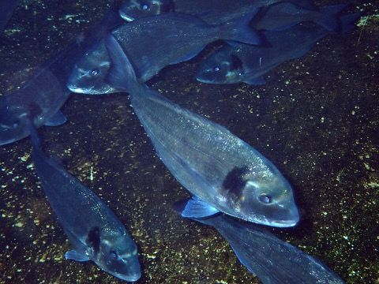
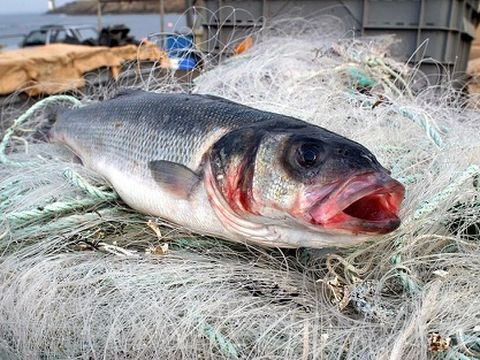
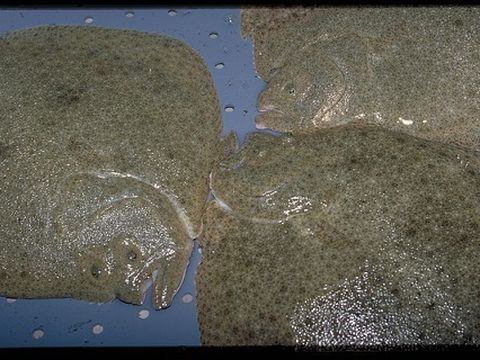
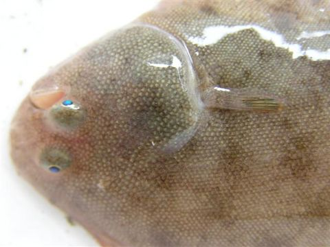

Modelo de crescimento em aquacultura
Um simulador do ciclo de engorda de quatro espécies criadas em Portugal e no Mediterrâneo, com parâmetros tirados da literatura científica. Mostra quando os peixes chegam ao tamanho comercial, quanta ração gastam e quanto custa produzi-los.




A carregar o modelo, que corre em Python no próprio browser. Na primeira visita demora 30 a 60 segundos; as seguintes são mais rápidas.
Dinis Costa · Mestrado em Biologia Marinha Aplicada · LinkedIn · Código e notebooks no GitHub
Fotografias (recortadas e reduzidas), via Wikimedia Commons: dourada, Isabelle Cheret; robalo, Olivier Dugornay; pregado, Stéphane Lesbats (as três do Ifremer, CC BY 4.0); linguado, Mario Lepage (CC BY 3.0).